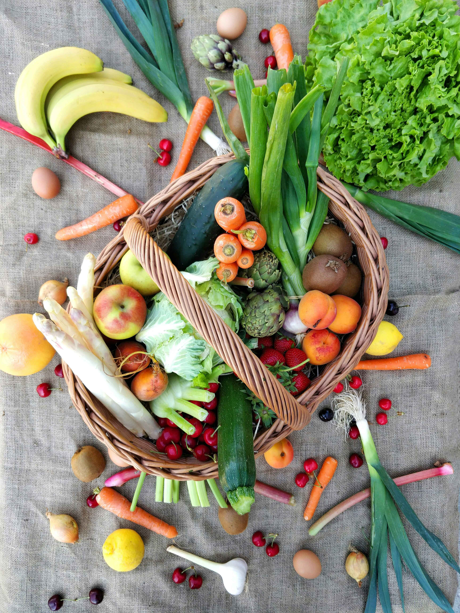

Same-day groceries in your neighbourhood
FreshBasket connects you to trusted local markets and supermarkets so you can stock up on fresh produce, pantry staples and hpusehold essentials without leaving home

From browsing to delivery, we make weekly shopping simple and predictable.
Enter your address to see nearby supermarkets and open-air markets. Filter by price, distance, or speciality products.
Add fresh produce, grains, meat, snacks and household items. See live totals, delivery windows and substitution options.
Our shoppers pick and pack your order carefully. Follow your rider on the map and receive updates until it reaches your door.
Shop across aisles just like in a physical supermarket, without waiting in line.
Crisp lattice, ripe tomatoes, seasonal fruits, herbs and more siurced daily from partner farms and markets.
- Hand-selected produce with quality checks before dispatch.
- Seasonal bundles designed for soups, salads and stir-fries.
Stock up on rice, pasta, beans, flour, spices, tinned foods and everyday cooking essentials from trusted brands.
- Bulk and family-size options to help you save on weekly staples.
- Clear labelling fr dietary needs such as gluten-free or vegan.
From milk, youghurt and cheese to poultry, seafood and frozen vegetables, keep your fridge and freezer fully stocked.
- Temperature controlled delivery to protest sensitive items.
- Easy re-ordering of your fridge favourites in one-tap.
Create a free FreshBasket Market account, save your usual items and delivery addresses, and complete your next weekly shop in under ten minutes.